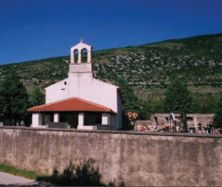

La scarsita di documenti ne rende difficile la creazione di un profilo storico
In uno dei soliti vagabondaggi per l’Istria, questa volta ci siamo spinti lungo l’alta Valdarsa per poter visitare i paesi dei Cici, non quelli di Mune e Žejane, ma quelli di Nova Vas e di Šušnjevica. E così da Vozilici abbiamo infilato la stradetta pur asfaltata ma che a tratti sembrava un sentiero che ci portò dapprima a Stabljevac, poi a Kožljak, a Zagrad, a Načinovići, a Skavreti, a Nova Vas per arrivare finalmente alla meta più importante della nostra gita: Šušnjevica.
Un passato pieno di contraddizioni
Creare un profilo storico degli Istroromeni è un’impresa tutt’altro che facile: la quantità di documenti antichi di cui si dispone è piuttosto scarsa, soprattutto per la mancanza di fonti primarie, non esistendo una tradizione scritta letteraria stabile, ma anche per le contraddizioni insite nelle poche fonti di cui si dispone. Proprio in questo contesto, sono state formulate ipotesi tra le più svariate. C’è il cronista Ireneo della Croce (XVII sec.) il quale afferma che gli Istroromeni sono giunti in Istria sulla base della pressione dell’Impero Ottomano; lo storico triestino Covaz, invece, sostiene l’origine italica come esempio particolare della conservazione della lingua latina; il Kandler a sua volta conferma l’origine romana sostenendo che i romeni istriani sono dei coloni trasferiti da Augusto.
Altre teorie, più verosimili, sostengono invece che si tratti di popolazioni che si sono spostate verso occidente seguendo gli spostamenti delle loro greggi. La denominazione di queste popolazioni dell’Istria resta ad ogni modo abbastanza vaga fino al 1463, quando per la prima volta in un documento si parla di Cicci. Con il passare del tempo la loro storia diventa più precisa tanto che a partire dal XVIII secolo diventano Cici solo gli abitanti dove si sono stabiliti in maggior numero e dunque nei dintorni di Žejane e di Šušnjevica.
Quando l’Istria diventò quasi un "deserto"
A partire dal XII secolo iniziò nell’Istria l’espansione di due grandi potenze: quella veneta e quella asburgica che dovevano portare nel corso di diversi secoli a dure lotte e grandi sofferenze per il popolo. In questo periodo, le condizioni economiche andarono peggiorando a causa delle guerre e delle continue epidemie di peste e di malaria al punto da spopolare quasi completamente vasti territori. La situazione era talmente grave che nel 1375 la Serenissima affermava che "l’Istria ormai è da considerarsi un deserto". Si poneva perciò il problema del ripopolamento di tali terre e quindi si favorì la forte migrazione di popolazioni provenienti dal sud-est dei Balcani.
A differenza di precedenti invasioni che avevano avuto carattere militare, queste migrazioni pacifiche derivarono dalla necessità di fuggire davanti la dominazione turca. Tra questi nomadi vi erano gruppi di Bosniaci, di Erzegovesi, di Greci, di Albanesi e di Romeni. Mentre nel corso dei secoli i primi si sono completamente slavizzati, i Romeni hanno conservato la loro lingua anche se parecchio decaduta, ovvero quello che resta di quella antica che, a detta degli studiosi, "non è certo il romeno di Bucarest perché si è bastardato nel tempo, come i cognomi."
I primi insediamenti
Risulta, comunque, che l’insediamento nella parte settentrionale dell’Istria è unico tra il XIV e il XV secolo. Inizialmente questi romeni, con le loro greggi si stanziarono nei pressi del monte Šija (Sega in italiano, nel comune di Mattuglie). Una parte discese verso nord formando Jeiani (la Žejane di oggi), i rimanenti si spostarono a sud, nella zona dell’alta Valdarsa, cioè sopra quella paludosa dell’allora lago di Cepich. Non risultano chiari i motivi che indussero questa popolazione a dividersi. Ci restano tre leggende. Secondo la prima, sette famiglie avrebbero accettato l’invito delle suore benedettine del convento ai piedi del monte (il nome di Mune deriverebbe da nune = suore in romeno), assegnando loro terreni e facendoli lavorare come servi della gleba, mentre le altre famiglie avrebbero preso la strada della Valdarsa. La seconda versione dice che, essendo cessato il pericolo turco, alcune famiglie se ne andarono alla ricerca di terreni più fertili mentre la terza leggenda racconta che i Romeni furono costretti a scendere a valle per sottostare a un maggior controllo in quanto autori, per necessità o forse per vezzo, di abigeato, razzie cioè e furti di bestiame nei villaggi pedemontani dell’Istria.
Il commercio di carbon dolce e aceto
Sin dal loro insediamento e fino alla Seconda guerra mondiale, queste popolazioni hanno esplicato un’attività agricola e pastorale nonché quella di carbonai e di commercianti di carbon dolce e di aceto. Sia a Žejane che a Šušnjevica si ricorda ancora come l’aceto venisse procurato durante i pascoli invernali nella bassa Istria grazie allo scambio di latte, di formaggio, di agnelli e di lana. Poi tutto questo ebbe una contrazione, soprattutto dopo la Prima guerra mondiale, quando l’aceto si cominciò a produrre e a imbottigliare su scala industriale e anche la produzione del carbon dolce dovette diminuire date le nuove tecnologie impiegate nel riscaldamento. E fu così che agli inizi del XX secolo molti giovani si videro costretti a emigrare. Ma il peggio arrivò dopo il secondo conflitto, quando quasi tutti i paesi e i villaggi della Ciciaria vennero bruciati a causa del legame della popolazione con i partigiani. Solo a Male Mune vennero bruciate 98 case e 85 stalle...
Una struttura patriarcale
Un tempo questi villaggi avevano una struttura patriarcale-religiosa tipica che oggi praticamente quasi non esiste più. Ma ancora all’interno delle famiglie esiste sempre un grande rispetto per i vecchi che vivono in casa con i figli. Siccome non esiste alcuna tradizione scritta ma solamente remote leggende, storie e canzoni trasmesse da padre in figlio, si può dedurre che nel passato non esistesse un’autorità unica ma un consiglio degli anziani per pratiche di vario genere: religiose, morali, di lavoro. Il riunirsi all’osteria, parlare e cantare le quasi ossessive nenie su antichi racconti e tradizioni romene, era una pratica costante che indicava appunto il rispetto per gli anziani.
C’è poi un’altra caratteristica della quale abbiamo discusso con alcuni Cici durante la nostra pur breve visita nell’alta Valdarsa: l’atavico campanilismo tra Žejane e Šušnjevica. Comunque tutto quel che sanno della loro origine è confuso. Affermano soltanto che sono venuti da lontano. E tutti ricordano con un certo orgoglio che nel 1910 le comunità istroromene si incontrarono ad Abbazia con la regina romena Carmen Sylva.
Andrei Glavina, una figura di cui andare fieri
Ma c’è un altro personaggio di cui i Cici di Šušnjevica vanno fieri. Costui è Andrei Glavina. Nato a Valdarsa nel 1881 da una famiglia umile di contadini, viene prelevato dal suo paese natale e portato in Romania dal grande linguista Burada – era arrivato qui per i suoi studi – perché imparasse la lingua romena standard frequentando i più prestigiosi collegi nazionali. Nel 1901 egli ritorna in Istria dove ottiene l’abilitazione alla docenza della lingua italiana e romena ma la sua figura inizia ad assumere un ruolo maggiore nel primo dopoguerra quando istituisce con l’apporto di insegnanti romeni e italiani la prima scuola istroromena la quale insegnerà a oltre 100 alunni i fondamenti non solo della lingua italiana ma anche di quella romena con lo scopo di poter finalmente conoscere le loro origini.
 Il Glavina diventa anche sindaco di Valdarsa e ci rimane fino al 1935 adottando come simbolo del proprio municipio la Colonna Traiana, proprio per sottolineare il legame storico del territorio con Roma e con la Romania. Ancora un punto a favore del Glavina: dà inizio all’ingente opera di bonifica del lago di Cepich che si trasformerà in breve tempo in un territorio agricolo molto produttivo.
Gli anni bui e i giorni nostri
La Seconda guerra mondiale e il periodo successivo sono dei periodi abbastanza bui. L’interesse letterario per i Cici e i Ciribiri va scemando col passare degli anni. Poi c’è la questione dell’esodo. Molte famiglie optano, vanno in Italia e successivamente negli Stati Uniti e in Australia. Costruire un profilo demografico e linguistico di quante persone effettivamente ancora conoscano (seppur passivamente) il dialetto istro-romeno è un’impresa del tutto impossibile perché i dati sarebbero incompleti da qualsiasi punto di vista. I Cici sono rimasti in pochi e utilizzano l’istroromeno a fianco della lingua croata che prediligono – ce ne siamo accorti durante la nostra breve sosta – nella maggior parte delle situazioni comunicative. D’altra parte il processo di sostituzione della loro parlata con il croato è un processo che ormai si può considerare concluso, soprattutto a causa del fortissimo apporto "istruttivo-distruttivo" delle scuole. Ma nonostante ciò continua a sopravvivere una radice tradizionale che resterà senza alcun dubbio indelebile e continuerà a conservare i nomi dei luoghi, dei fiumi, dei villaggi, che in silenzio, forse disabitati, rimarranno custodi della tradizione e della cultura dei Cici e dei Ciribiri.
Là dove il tempo si è fermato...
Per finire torneremo a Šušnjevica. Il paese conserva ancora i tratti principali che hanno contraddistinto la sua storia, come i tetti spioventi e le piccole stradine che congiungono le varie abitazioni. In certi momenti sembra che il tempo non sia trascorso in questi ultimi anni, che tutto sia rimasto come un tempo se non per l’asfalto sulla stretta strada e per alcune case ricostruite di recente seguendo uno stile decisamente più moderno, sempre comunque rispettoso della terra in cui si trovano. Però ci sono anche molte case disabitate, la maggior parte delle quali in pessime condizioni. E allora non ci resta che infilare nuovamente la strada e lasciarci alle spalle la tabella con la scritta "Šušnjevica – Susnievițę" e raggiungere dapprima il paese di Romanija, poi Vragna e alla fine il tunnel del Monte Maggiore.
Mario Schiavato
December 31, 2009
© 2009 La voce del popolo